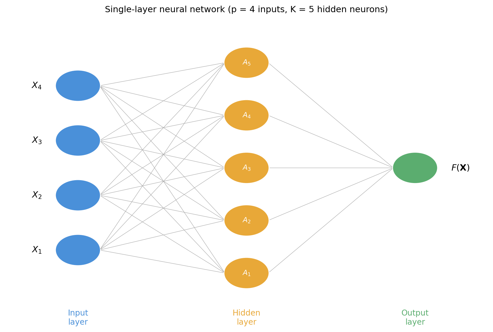
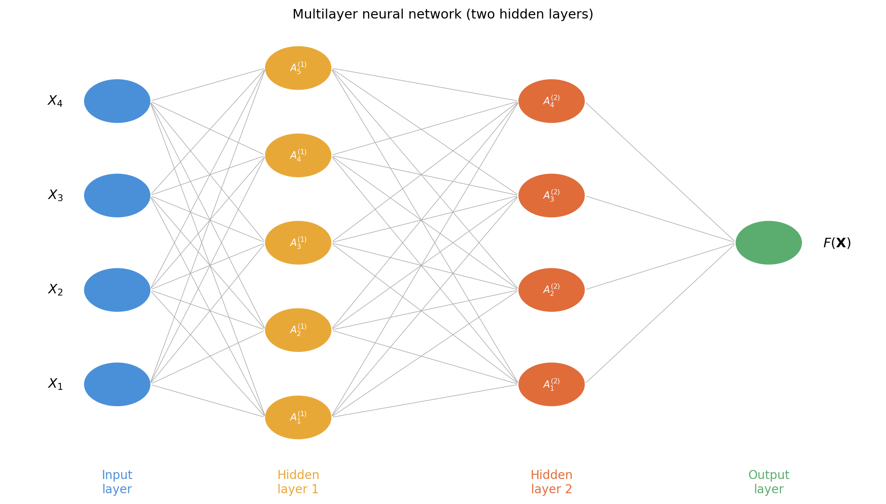
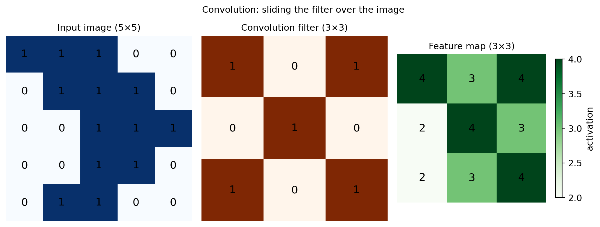

This resurgence is what we now call deep learning

EDS 232
Lesson 11
Neural Networks
In this lesson
Neural network applications
A brief history
This resurgence is what we now call deep learning
Applications
Deep neural networks are at the heart of many contemporary technological advancements:
Large language models: used for text and code generation (ChatGPT, Claude) — neural networks with likely trillions of parameters
Image recognition: identifying objects in images, with applications from autonomous vehicles to medical imaging
In the realm of environmental applications:
Single-layer neural network
Setup
Given a vector of features \(\mathbf{X} = (X_1, \ldots, X_p)\) and a response variable \(Y\), our goal is to learn a function \(F(\mathbf{X})\) to predict \(Y\) — same goal as throughout the course.
A single-layer neural network (a network with one hidden layer) has three core components:
Input layer — the \(p\) features \(X_1, \ldots, X_p\)
Hidden layer — \(K\) neurons, each computing an activation
Output layer — the final model output \(F(\mathbf{X})\)
Architecture

The process
Step 1 — Input layer. An observation \((X_1, \ldots, X_p)\) is fed through the network left to right.
. . .
Step 2 — Hidden layer. Each neuron \(k\) computes an activation \(A_k\) in two steps:
Form a linear combination using a bias \(w_{k0}\) and weights \(w_{k1}, \ldots, w_{kp}\): \[w_{k0} + w_{k1} X_1 + \cdots + w_{kp} X_p\]
Pass through a nonlinear activation function \(g(z)\): \[A_k = g(w_{k0} + w_{k1} X_1 + \cdots + w_{kp} X_p)\]
Each neuron has \(p + 1\) parameters (\(p\) weights + 1 bias).
. . .
Step 3 — Output layer. Final prediction is a linear combination of all \(K\) activations:
\[F(X_1, \ldots, X_p) = \beta_0 + \beta_1 A_1 + \cdots + \beta_K A_K\]
Fitting a neural network
Fitting means estimating all weights \(w_{kj}\), biases \(w_{k0}\), and output coefficients \(\beta_0, \ldots, \beta_K\) from the training data.
We minimize a loss function that measures prediction error:
This is done via stochastic gradient descent + backpropagation, which efficiently computes gradients of the loss with respect to every parameter.
(See ISLP §10.7 for details on the fitting algorithm)
Activation functions
Why activation functions?
The activation function introduces the nonlinearity that gives neural networks their modeling power.
Without it, the entire network would collapse to a linear model — regardless of how many layers it has.
Two of the most common choices:
Sigmoid: \(\displaystyle g(z) = \frac{e^z}{1 + e^z}\) — squashes any input to \((0, 1)\)
ReLU (Rectified Linear Unit): \(g(z) = \max(0, z)\) — zero for negative inputs, identity for positive
Activation functions

Multilayer neural networks
Multilayer neural networks
In practice, neural networks have more than one hidden layer and many neurons per layer (often hundreds). This is what makes them deep networks.
First hidden layer (\(K_1\) neurons):
\[\begin{aligned} A_k^{(1)} &= g\!\left(w_{k0}^{(1)} + w_{k1}^{(1)} X_1 + \cdots + w_{kp}^{(1)} X_p\right) \\ &= g\!\left(w_{k0}^{(1)} + \sum_{j=1}^{p} w_{kj}^{(1)} X_j\right) \end{aligned}\]
Second hidden layer (\(K_2\) neurons) — takes the previous layer’s activations as input:
\[\begin{aligned} A_k^{(2)} &= g\!\left(w_{k0}^{(2)} + w_{k1}^{(2)} A_1^{(1)} + \cdots + w_{kK_1}^{(2)} A_{K_1}^{(1)}\right) \\ &= g\!\left(w_{k0}^{(2)} + \sum_{j=1}^{K_1} w_{kj}^{(2)} A_j^{(1)}\right) \end{aligned}\]
Multilayer architecture

Depth and representations
As the network grows deeper, it can represent increasingly complex functions.
To build an intuitive understanding of how deep networks work, watch:
As you watch, think about:
Convolutional neural networks
Convolutional neural networks
The networks we have studied treat the input as a flat vector of features — this discards spatial structure when the input is an image.
CNNs are designed specifically for image data:
In environmental science: land cover classification, deforestation detection, species identification in camera traps
Convolution filters
A convolution filter (kernel) is a small matrix that acts as a feature detector.
We slide it across the image, computing a dot product at each position → feature map.

Higher values (darker green) = region closely resembles the filter.
Filters are learned from training data — the network discovers the most useful features automatically.
Pooling layer
A pooling layer reduces the spatial size of feature maps — more compact and less sensitive to small shifts in feature position.
Max pooling: divide into non-overlapping blocks, retain only the maximum value per block.

Full CNN architecture
A complete CNN combines:
Adapted from What is the Convolutional Neural Network Architecture?